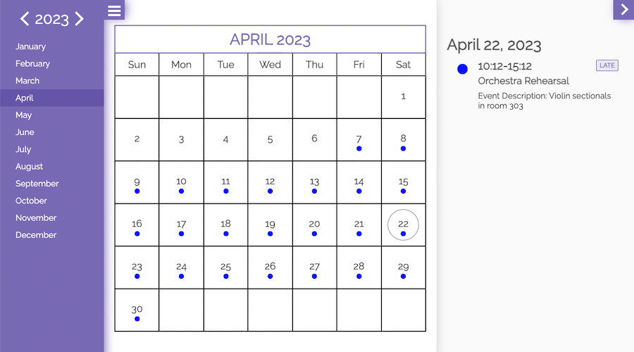
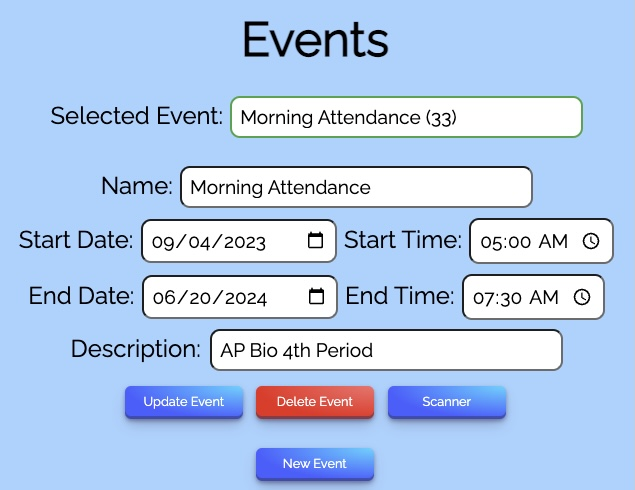

Take attendance in seconds.

Tired of role call and filling out attendance forms? Swiftly scan unique QR codes to take attendance!
Get StartedFeatures
Unique QR Codes

Each group gets a unique QR code that members can scan to join. Everyone also gets a unique QR code linked to their Google Account which can be scanned to take attendance.
Multiple Admins

Delegate roles as desired. Admins have access to a QR code scanner, an event manager, and a table and calendar view of their group members' attendance.
Calendar View

Easily browse past and upcoming events from your groups. Create and view reocurring events. Edit previous attendance records as needed.
Participate in many groups

Quickly view your past attendance and upcoming events for your groups, manage which groups you participate in, and notify group admins if you know you'll be late/absent.
Actions
Click below to navigate to the specified features!
Quick Attendance
Instantly start taking attendance! Just scan QR Codes from one of the groups you own and a new event will automatically be created to keep track of whose codes you scan.
Join Groups
Join groups to sign up for their events - all it takes is an invite link or scanning their QR-Code! You can view your attendance status or leave the group at any time.
Take Attendance
Scan people's QR-Codes for existing events to set their attendance status. By default, you cannot scan the same person twice in a row, but if you scan a person again at a later time, their attendance status for the relevant event will be updated.
View Your Events
Events are the classes, lessons, rehearsals and more that the organizations/groups you're a member of have invited you to and the ones you've created. You can view upcoming events and see which events you were marked absent/present for in the calendar.
Create New Events
Create, edit and delete events for the groups you own from the Admin Dashboard!
Our Partners